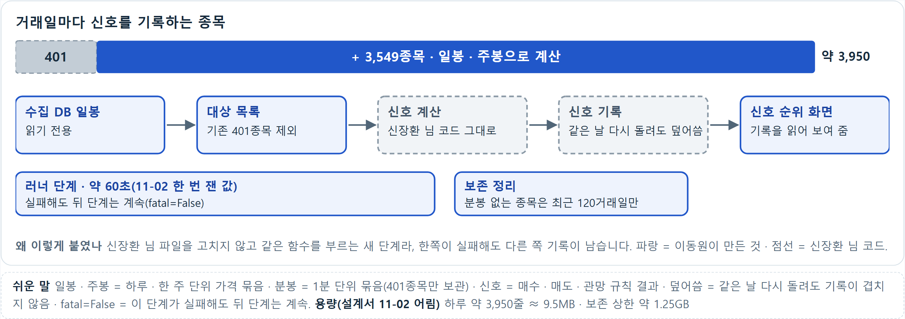
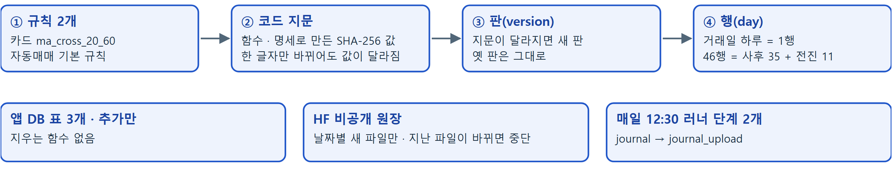
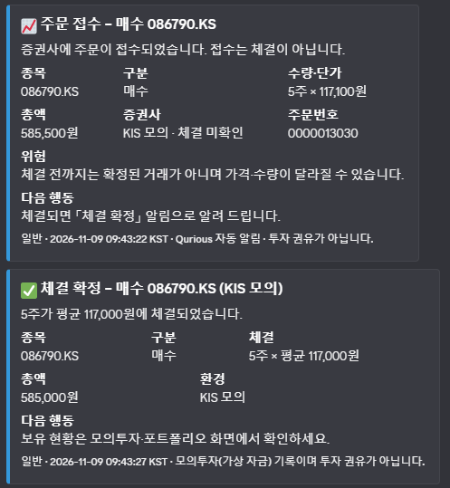
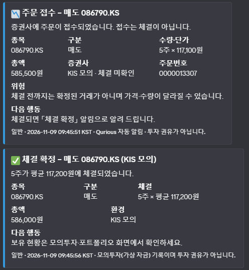
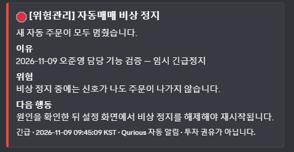
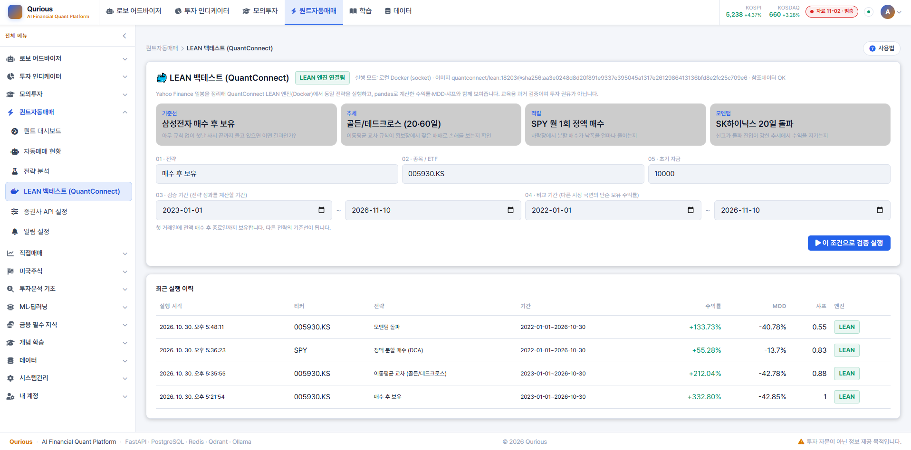

Qurious 3차 — 나만의 투자 인디케이터
내 투자 규칙을 지표로 만들고, TradingView · QuantConnect LEAN 으로 다시 검증하고, 증권사 모의계좌까지 이어 줍니다. 신호의 근거와 반대 근거를 함께 보여 주고, 검증한 것과 못 한 것을 구분해서 말씀드립니다.
이동원
데이터 · 신호 근거 · 대사
QURIOUS / 데이터 · 신호 근거 · 대사
신호를 믿어도 되는지,
확인하는 쪽을 맡았습니다
데이터 수집, 신호 근거, 같은 신호를 다시 돌려 맞춰 보는 대사.
잘하는 곳에서 배우고 비어 있는 곳을 채웠습니다. 못 한 것은 못 했다고 적었습니다.
문제 정의
신호는 보이는데, 믿을 근거가 안 보인다는 말을 들었습니다
10월 27일 모의투자를 직접 써 본 사용자의 지적 세 가지
최신인지 모른다
기준일이 작은 회색 글씨로만 나옴
이유를 설명 못 한다
근거 문장이 응답엔 있었지만 카드가 숨김
위험 범위가 없다
오르내림 범위(위험) 설명이 없음
코드를 확인해 보니 맞았습니다. 30·40대 투자자 1,005명 중 39.6%는 증권사 보고서를 덜 읽는 까닭으로 「길어서」를 꼽았습니다.
시장 조사
이미 있는 서비스는 규칙을 세우고, 시험하고, 주문까지 잇습니다
퀀터스 · 젠포트 · 인텔리퀀트 · Composer는 노코드나 AI로 만든 전략을 백테스트하고 주문까지 잇습니다.
TradingView는 Pine으로, QuantConnect LEAN은 독립 엔진으로 같은 규칙을 시험합니다.
요금 예시 10-26 확인
8곳 모두 무료 구간이 있고, 유료는 Composer 월 10~32달러 · 인텔리퀀트 월 3만~10만 원처럼 제각각입니다.
공식 자료로 본 서비스 8곳의 기능
| 노코드 | AI 지원 | 백테스트 | 사용자 Pine | Python · LEAN | 주문 연동 | |
|---|---|---|---|---|---|---|
| 퀀터스 | ● | ● | ● | — | — | ● |
| 젠포트 | ● | △ | ● | — | — | ● |
| 인텔리퀀트 | ● | ● | ● | — | — | ● |
| Composer | ● | ● | ● | — | — | ● |
| TradingView | △ | △ | ● | ● | — | △ |
| QuantConnect | — | △ | ● | — | ● | ● |
| Portfolio Visualizer | △ | △ | ● | — | — | — |
| Portfolio123 | ● | ● | ● | — | △ | ● |
| ● 확인된 곳 (8곳 중) | 5 | 4 | 8 | 1 | 1 | 6 |
그래도 비어 있는 곳
같은 규칙인데 도구마다 결과가 달라질 수 있습니다
TradingView는 주문을 브로커 에뮬레이터로 시뮬레이션하고, QuantConnect는 실거래와 백테스트의 차이를 데이터 · 모델링 · 증권사로 나눕니다.
같은 규칙을 여러 환경에서 돌려 차이의 이유까지 보여 주는 곳은 찾지 못했습니다. 다만 검증 전 가설입니다.
조사에서 센 숫자
조사한 8곳 중 TradingView(Pine)와 LEAN을 함께 쓰는 곳은 0곳입니다(5장 표). TradingView는 기본값으로 종가에 난 신호를 다음 봉 시가에 체결해, 체결 가정이 다르면 같은 규칙도 결과가 갈립니다.
그래서 3차가 하기로 한 것
대사(對査)라고 부릅니다. 신호, 보유, 주문, 체결, 비용을 단계별로 맞춥니다. 이 중 일지와 LEAN은 강민석 님이 맞춰 봤습니다 — 09-01~11-05 일지 44행 · 보유 44일 일치 · 체결 12건 가격 차이 0bp.그런데 비어 있는 곳이 있었습니다
등급 한 줄에 근거가 묻히고, 설명만 붙이면 오히려 더 따르게 됩니다
무슨 실험이었나 Bansal 외 · CHI 2021
AI 설명이 사람과 AI 팀을 더 정확하게 할까? 리뷰 감성 2종 · LSAT, 데이터 3종에 1,500명 이상(조건당 약 100명).
결과
AI 도움으로 팀은 혼자보다 나았지만 설명을 붙여도 더 오르지 않았고 AI가 틀렸을 때도 더 따랐습니다. 대안 답까지 설명하면 쏠림이 덜했습니다.
우리 화면
근거와 반대로 본 까닭을 같은 크기로 둡니다. 이 효과를 직접 재 보지는 못했습니다.
같은 신호를 보여 주는 두 가지 방식
그림은 구조를 보여 주는 예시이며 실제 화면의 값이 아닙니다.우리가 만든 것 · 한눈에 보는 구조
수집부터 증권사 모의 주문까지, 파란 칸이 제가 만든 것입니다
docs/phase-3/06-retrospective/videos/파일/발표/ 를 받은 뒤 다시 열어 주세요

마지막 장규칙 신호의 기록이며 추천이 아닙니다. 전체를 실시간으로 다시 판단하는 것은 11월 12일 뒤 설계입니다
docs/phase-3/06-retrospective/videos/파일/발표/ 를 받은 뒤 다시 열어 주세요

마지막 장46행은 봉인 전 사후 계산 35행과 봉인 뒤 전진 기록 11행입니다. 성과가 아니라 기록과 지문 고정이 동작한다는 증거입니다. 지문이 달라지면 다음 회차가 새 판을 등록하고 옛 판은 그대로 둡니다
기준11-11 10:18 기준 영상(행 46). 이후 수집 회차마다 행이 하나씩 늘어납니다
신장환
전략 카드 · 성과 검증
신장환 · 기본 인디케이터 전략 · 커스텀 인디케이터
규칙을 카드 한 장에 적고,
같게 읽히는지 숫자로 확인했습니다
- 시작할 때 — 판단하는 곳 넷, 규칙도 넷손절 · 익절은 % 만, 수량 · 체결 시점을 한곳에 적은 명세 없음
- 같은 종목이 화면마다 반대로 보임신한지주 — 분석 화면 넷은 「매도」, 자동매매는 「매수」 (팀 피드백)
- 그래서 — 전략 카드 한 장에 적고, 모두 그 카드를 읽게백테스트 · Pine 생성기 · 자동매매
차가 난 둘은 까닭까지
수량 · 체결 시점
파는 판단 날과 까닭
→ 「기준 전략 없음」
전체 그림
카드 한 장을 백테스트 · Pine 생성기 · 자동매매가 읽습니다
파란 칸 제가 만든 것 · 회색 점선 칸 팀원이 만든 것
전략 카드
손절 · 익절 · 수량 · 체결 시점까지 한 장에 적었습니다
교차 순간이 아니라 위아래를 보는 상태 판정
왜 이렇게 설계했나
- 이동평균 교차 — 추세가 이어지는 구간을 잡음새 정보가 며칠 ~ 몇 주에 걸쳐 가격에 들어가 한 방향 움직임이 이어짐 · 횡보장에선 거짓 신호가 늘어남
- 다음 날 시가에 체결신호를 본 그날 종가에 바로 사는 효과를 내지 않도록
- 칸 이름과 값은 카드를 읽는 세 분께 여쭤 정함Pine · LEAN · 자동매매 담당
- 수량 계산은 제가 백테스트 엔진에 넣음손절에 걸려도 평가액의 1% 를 넘게 잃지 않도록 주 수를 정함
화면 · 커스텀 인디케이터
카드를 화면에서 고치고, 차트에 표시합니다
 12
12실제 화면 — 기본 인디케이터 전략 → 가격 차트(삼성전자 · 2026-11-04 종가 기준)
- 전략 카드를 화면에서 고쳐 저장저장한 카드는 Pine 목록에도 나옴
- 1카드 조건이 바뀐 날을 차트에 표시20일선이 60일선 위로 · 아래로 바뀐 날
- 2새 지표 ADX · 상대 강도차트 아래 칸에서 골라 봄
- 커스텀 지표를 TradingView 정의로자유 산식의 정규화 함수
같은 값 · 같은 판단인지
지표는 LEAN 과 같았고, 같은 카드는 같은 날 사고팔았습니다
① 지표 값 — LEAN 과 날짜별 대조
- 정의가 같은 지표 — 차 1.5e-10 이하RSI · ATR · 볼린저 · 이동평균
- 차가 난 둘은 까닭까지 찾음DMI · EMA — 시간이 지나면 거의 같아짐
- 미래 봉을 보지 않음시험으로 지킴
② 같은 카드 → 백테스트 · 자동매매 삼성전자 2020 ~ 2026.08
- 갈린 1번 — 손절선을 잡는 가격 차이자동매매는 슬리피지를 더한 체결가에서 손절선을 잡음
기준 전략
기준 전략을 110번 시도했고, 합격한 전략은 없었습니다
- 조합표와 합격선을 먼저 적고 그대로 돌림결과를 보고 고르면 과최적화가 되기 때문
- 이동평균 11조합 × 코스피 시가총액 상위 10종목 = 110번위험 1% 수량 · 비용을 뺀 뒤
- 합격을 막은 것은 샤프위험 1% 라 평가액의 평균 9 ~ 23% 만 들어가고 나머지는 현금
- 합격선은 결과를 본 뒤 바꾸지 않음그래서 결과는 「기준 전략 없음」
합격선 — 셋을 동시에 넘어야 합격 (넘은 시도 / 110)
정리
결과는 그대로, 못 한 것은 못 했다고 적었습니다
남은 것
- 백테스트는 수정주가 한 벌로만원래 가격 규칙은 넣지 않음
- LEAN 대조의 합격 오차 숫자 미정차이와 까닭만 보임
- 저장 카드는 DB 가 아닌 파일화면에서 저장한 카드는 사용자별 파일로 둠
① 전략 카드 읽기 → Pine 목록
② 기준 전략 110개 시도 합격 0 + 성과 검증
docs/phase-3/06-retrospective/videos/파일/발표/ 를 받은 뒤 다시 열어 주세요
마지막 장카드 저장은 이 영상에서 누르지 않았습니다. 규칙 신호는 투자 권유가 아닙니다
docs/phase-3/06-retrospective/videos/파일/발표/ 를 받은 뒤 다시 열어 주세요
마지막 장기준 전략 카드 화면은 이동원, 시도와 검증은 신장환이 맡았습니다
오준영
배분 · 리밸런싱 · 실행
QURIOUS / 자산배분 · 리밸런싱 · 증권사 연동
판단을 계획으로,
실행을 기록으로
사용자가 확인한 배분과 전략을
모의 실행·위험관리·결과 확인으로 연결합니다.
01 / 자산배분과 리밸런싱
계산 결과는 사용자의 확인을 거쳐 적용합니다
성향별 기준 배분에 네 가지 모델을 더하고, 자료 기준일과 입력 조건을 함께 남깁니다.
리스크 패리티
자산군별 위험 기여를
균등하게 배분
최소분산
비중 제약 안에서
분산을 낮추는 조합
Black–Litterman
기준 비중에 상대 전망과
신뢰도를 반영
국면 배분
추세 × 변동성에 따라
네 국면의 목표 계산
설정 확인
기본 가져오기는 국내주식 부분만 적용하고 나머지는 현금으로 남깁니다.
02 / 전략 주문과 위험관리
주문 전 검증하고, 접수 후 체결을 추적합니다
자동매매 계열의 주문을 검사하고, 가상 장부와 KIS 모의계좌를 구분합니다.
· 알림
실행 전에
최신 확정 자료
계좌·전략 판·귀속 보유
손실 한도·비상 정지
불명확할 때
기존 주문 번호로 조회
접수와 체결 상태 구분
같은 요청의 중복 방지
운영 중에
판단 기본 600초
체결 추적 120초
heartbeat 60초
비상 정지는 자동매매 계열·개인 KIS 모의 주문에 적용하며, 보유 종목을 자동 청산하지 않습니다.
QUANT 판 2의 조정 사건 보류 중에는 자동 손절·익절도 중단됩니다. 자동 교정·보류 해제는 미지원입니다.
03 / 실제 KIS 모의 검증
3종목 30주를 매수하고, 전량 매도했습니다
2026.11.06 · 하나금융지주 · S-Oil · 삼성에스디에스 각 10주, KIS 모의계좌 시험
매수 / 3건 FILLED
총 30주 체결
홈페이지 시험 진단의 추천 목록 사용
사용자의 실제 성향과 별도인 기능 검증용 선택매도 / 3건 FILLED
총 30주 체결
09:40:32~09:43:41 매수·매도 확인
앱 주문 기록과 증권사 체결 결과 대조시험 잔량 0주
세 종목 모두 전량 매도
기존 1주 보존
삼성전자 · 위험 설정 유지
미체결 0건
여섯 주문 모두 완료
앱 주문 기록과 KIS 직접 체결 조회에서 수량·완료 상태를 대조했습니다.
이 연결 시험에서 찾은 체결 알림 오류와, 이후 긴급정지 취소 누락을 다음 두 장에서 설명합니다.
04 / 발견한 오류 ① · 11/6 체결 알림
체결은 한 번인데, 알림이 두 번 왔습니다
삼성에스디에스 모의 매수 10주: 09:43:14·09:43:16에 같은 체결 알림이 도착했습니다.
원인 · 두 경로가 같은 체결을 확인
정기 체결 확인과 복구 조회가
각각 같은 주문의 알림을 보냈습니다.
수정 · 같은 주문 ID로 발송 권한 선점
두 경로가 동일한 주문 ID를 전달하고,
DB에서 발송 권한을 먼저 확보하게 했습니다.
신규 2건 포함 담당 회귀 244건 통과 · 최초 거래의 주문 자체 중복은 0건입니다.
05 / 발견한 오류 ② · 11/9 긴급정지
긴급정지에서 KIS 미체결 취소가 빠졌습니다
신규 주문은 막았지만, 개인 KIS 모의 주문의 취소 경로는 연결되지 않았습니다.
원인 · 직접 KIS 주문을 건너뜀
기존 미체결 취소 함수가
직접 KIS 모의 주문을 제외했습니다.
수정 · 정지에서 취소 서비스 연결
수동·일손실 정지가 기존 KIS 취소
서비스를 호출하도록 연결했습니다.
정지 중 신규 매수·매도·자동 시작 차단과 기존 보유 1주 보존을 확인했습니다.
06 / 실제 수신 알림 · 매수
매수 접수와 체결 확정을 따로 알려 줍니다
2026.11.09 · 사용자가 받은 Discord 알림 원본 · KIS 모의투자(가상 자금)

접수 단계에서 상태를 밝힙니다
주문번호와 함께 체결 미확인을 표시하고, 체결 전에는 가격·수량이 달라질 수 있음을 안내합니다.
체결되면 실제 결과를 알립니다
평균 체결가와 체결 수량·총액을 알려 주고, 보유 현황을 확인할 화면을 안내합니다.
09:43:22 → 09:43:27 KST
07 / 실제 수신 알림 · 매도
매도도 접수와 체결 결과를 구분합니다
2026.11.09 · 사용자가 받은 Discord 알림 원본 · KIS 모의투자(가상 자금)

매도 주문의 접수 상태
종목·수량·단가·총액과 주문번호를 표시합니다. 접수 시점에는 체결 미확인입니다.
확정된 체결 결과
실제로 체결된 평균 가격과 총액을 별도 알림으로 보내고, 모의투자·포트폴리오 화면을 안내합니다.
09:45:51 → 09:45:56 KST
08 / 실제 수신 알림 · 비상정지
정지 이유와 다시 시작하기 위한 행동을 알립니다
2026.11.09 09:45:09 KST · 사용자가 받은 Discord 긴급 알림 원본

이유 → 영향 → 다음 행동
왜 멈췄는지, 정지 중 주문이 어떻게 처리되는지, 사용자가 무엇을 해야 하는지 안내합니다.
정지 해제 시점은 캡처에 없습니다.
09 / 운영과 인수인계
암호화·독립 경보를 운영에 연결했습니다
11/9 DB0046 · 세 서비스 717파일 대조
5분 예약 · Discord 실제 수신 확인
인수자 복원 실습 · 보유 자산 자연 평가
docs/phase-3/06-retrospective/videos/파일/발표/ 를 받은 뒤 다시 열어 주세요
마지막 장결과는 저장될 뿐 주문이나 리밸런싱 목표는 바뀌지 않습니다. 기준 균형 비중은 성향 배분이며 시가총액 비중이 아닙니다
docs/phase-3/06-retrospective/videos/파일/발표/ 를 받은 뒤 다시 열어 주세요
마지막 장이력은 실제 계산 결과입니다. 과거 출발 상태는 시험 입력이며, 자동 예약과 주문 실행은 꺼 두었습니다.
docs/phase-3/06-retrospective/videos/파일/발표/ 를 받은 뒤 다시 열어 주세요
마지막 장이번 영상은 초기 판단과 차단 기록입니다. 매수·매도 체결이나 KIS 연동 성공을 보여 주는 영상은 아닙니다.
강민석
LEAN 대사 · 모의투자
백테스트를 실행하는 데서 멈추지 않고,
결과가 맞는지 검증하다
기존 LEAN 백테스트 체계를 활용해 Paper 모의투자와 실행 조건을 맞추고, 신호·보유·체결·거래비용·성과 계산의 일관성을 검증했습니다.
최신 대사 보유 상태 일치
주문 방향·수량·체결가격 일치
양쪽 총 거래비용 차이
QuantConnect LEAN은 알고리즘 트레이딩 실행 엔진입니다
가격 데이터를 받아 전략을 실행하고 주문·체결·포트폴리오 통계를 관리하는 오픈소스 엔진입니다.
알고리즘을 구동하고 포지션·주문·체결을 관리합니다.
프로젝트 설정과 백테스트 실행을 터미널에서 관리합니다.
실행 환경과 의존성을 분리해 재현성을 높입니다.
담당 범위는 기존 실행 결과의 정합성 검증입니다
실행 조건과 성과 계산 기준을 정리하고 Paper 거래 기록과 대조했습니다.
종목·기간·가격·체결 조건 고정
LEAN native·pandas 출처와 지표 정의 구분
신호·보유·주문·체결·비용 비교
첫 대사에서 신호와 보유 상태의 차이를 발견했습니다
삼성전자 005930.KS · MA Cross 20/60 · 2026.09.01~10.30 · LEAN Docker와 Paper 그림자 일지
공통 40일 일치
공통 40일 일치
5일 불일치
비교 가능 주문 일치
| 불일치 날짜 | 그림자 일지 | LEAN |
|---|---|---|
| 09-29 | 보유 | 미보유 |
| 10-23 | 보유 | 미보유 |
| 10-26 | 보유 | 미보유 |
| 10-27 | 보유 | 미보유 |
| 10-28 | 보유 | 미보유 |
초기 대사 최대 체결가격 차이
요율은 근접했지만 참고값으로만 처리
원인을 추적해 실행 조건을 다시 맞췄습니다
자금 배분·가격 입력·체결 시점·주문 수량의 차이를 정리했습니다.
LEAN은 전액 배분을 시도했지만 Paper는 종목별 주문 예산과 매수·매도 비율을 적용했습니다.
청산 주문과 보유 상태 전이, 일별 스냅샷 시점을 거래 이벤트와 맞춰 확인했습니다.
- 대사 전용 알고리즘에서 30% 비중 적용
- `next_open`으로 주문일과 체결일 분리
- Collector DB 사용, 누락 데이터의 무단 대체 방지
- 신호는 수정종가, 장부는 원주가 종가, 체결은 다음 거래일 원주가 시가
- 주문 예산·비율·실제 체결 수량 별도 대조
최종 재실행에서 보유·주문·체결이 일치했습니다
2026.09.01~11.05 · 일지 44행 · LEAN 체결 12건 · `daily_lean_reconcile.py` v4
| 검증 항목 | 최초 대사 | 11.06 재대사 | 판정 |
|---|---|---|---|
| 보유 상태 | 35 / 40 | 44 / 44 | 일치 |
| 진입·청산 신호 | 40 / 40 | 41 / 41 (공통일) | 3일 커버리지 차이 |
| 주문 방향 | 2 / 2 | 12 / 12 | 일치 |
| 체결 수량 | 비교 제외 | 12 / 12 · 총 26주 | 일치 |
| 체결 가격 | 최대 440.8bp | 최대 0.0000bp | 일치 |
| 비용 요율 | 10.76 vs 10.67bp | 10.76 vs 10.76bp | 일치 |
44일 보유 상태 일치
12건 최대 가격 차이
매수·매도 양방향 합계
12건의 체결을 거래별 막대 그래프로 비교했습니다
날짜별 Paper와 LEAN 체결 수량을 나란히 표시했습니다. 12건 모두 가격 차이는 0bp입니다.
체결 이벤트 일치
최대 체결가격 차이
양방향 합계
최초 대사에서 확인한 보유 상태 불일치
`daily_lean_reconcile.py` v4 · 최초 대사 원본 출력

최초 대사 · 기간 09.01~10.30 · 일지 40행 · 보유 5일 불일치 · 체결가 최대 440.8bp
재대사에서 확인한 보유·체결 일치
2026.11.06 재대사 판정 요약 원본 출력

재대사 · 판정 요약 · 기간 09.01~11.05 · 일지 44행 · 보유 44일 일치 · 체결 12건 0.0000bp
12건의 수량·가격 대조 원본
날짜·방향별 체결 수량과 가격 차이 세부 출력

재대사 · 체결 세부 · 날짜·방향별 수량 차이 0 · 가격 차이 0.0bp
기존 Qurious 화면에서 LEAN 백테스트를 실행했습니다
실행 화면과 Docker 기반 LEAN 런타임 환경

LEAN 백테스트 실행 환경 · 기존 Qurious LEAN UI 및 실행 경로
체결가 차이는 시간과 가격 기준이 달랐기 때문입니다
최초 440.8bp는 Paper와 LEAN 결과 사이의 최대 가격 차이입니다. 실제 시장 슬리피지로 확정된 값은 아닙니다.
서로 다른 데이터와 체결 기준을 비교
동일한 다음 거래일 시가 기준으로 비교
거래비용은 총액과 거래 규모 대비 부담을 함께 봅니다
비용 요율은 거래대금 중 비용으로 지출한 비율입니다. 거래 규모가 달라도 비용 부담을 비교할 수 있습니다.
성과 수치가 다르면 산출 경로와 정의부터 확인했습니다
API 보조 계산값과 LEAN 엔진 통계를 하나의 성과처럼 섞지 않도록 출처를 구분했습니다.
| 2026.11.04 실행 예시 | 전략 API 계산 | LEAN native statistics |
|---|---|---|
| 순수익률 | -6.99% | -6.821% |
| MDD / Drawdown | -7.69% | 7.400% (낙폭 크기) |
| Sharpe Ratio | -3.37 | -2.922 |
| 거래 수 | 2건 | 2건 |
초기 자본·최종 평가액·비용 반영 시점
일별 평가액과 청산 기준 구분
관측 주기와 완료 거래 기준
DSR 계산에는 같은 관측 주기의 Sharpe를 넣어야 합니다
일별 수익률로 계산하는 DSR에 연율화 Sharpe가 들어가던 단위 불일치를 바로잡았습니다.
표본 길이·수익률 분포·여러 전략을 시도한 효과를 고려하는 통계 지표입니다.
목표는 검증 가능한 실행 결과를 만드는 것이었습니다
백테스트·기록·대사·성과 산출에서 실패를 성공으로 오판하지 않도록 보완했습니다.
- Snapshot 일부 실패와 DB 오류를 실패로 전달
- HF 원장 pull의 stdout 오류도 진단 가능하도록 보완
- 비교 데이터가 없으면 `unavailable` 처리
- 신호 3일의 커버리지 원인 확인
- TradingView CSV 직접 비교 및 별도 5일 실행 증빙
- ATR 전체 경로 통합과 DSR 고도화
- 실계좌 자동매매 전환·운영 승인은 이번 범위가 아님
“기능이 실행되는가?”에서
“그 결과를 신뢰할 수 있는가?”로 검증 기준을 확장했습니다.
신호·자금 배분·체결 시점·거래비용·가격 출처·성과 통계를 분리해 확인하고 차이의 원인을 추적했습니다.
여기서부터는 못 한 것입니다
신호가 맞는지는, 맞히지 못했습니다
신장환 님이 400종목 · 138일, 5만 줄 넘는 신호를 5거래일 뒤 수익과 맞춰 봤습니다.
매수 신호 적중률은 48.9 ~ 50.1%로, 아무 날이나 뽑아 오르는 비율 51.3%와 비슷하거나 낮았습니다. 매수 전체로 재면 49.1%(95% 구간 45.9 ~ 52.2%)이고 기준선 51.3%가 그 구간 안에 있어, 기준선보다 낫다고 말할 근거가 없습니다.
그래서 이 신호는 수익을 맞히는 것이 아니라 「이 규칙이 켜졌다」는 기록입니다.
범위는 5거래일 하나 · 비용 제외. 이동평균 교차 규칙은 별도 백테스트 110개 시도(11조합 × 10종목)에서 합격 0 — 합격선 세 개 가운데 샤프(> 1.0)를 넘은 시도가 0/110, 최고 0.946.
5거래일 뒤 방향 적중률 (%)
막대는 0에서 시작합니다. 매수·매도 모두 기준선과 거의 차이가 없습니다.그 밖에 못 한 것과, 이어갈 길
못 한 것은 못 했다고 적고, 이어갈 길을 붙였습니다
일지가 짧고, 대사는 한 조건뿐
전진 기록 11행 · 대사는 한 조건.
→ 기록을 쌓아 다른 전략도 맞춥니다.
TradingView는 일부만 확인
Pine 두 판 1회 컴파일 · 실제 알림 수신은 못 함.
→ 공개 주소가 생기면 받아 봅니다.
체결과 비용은 가정
시장 충격 · 거절 · 지연은 안 쟀고 슬리피지는 10bp 고정.
→ 공식 종가와 맞춘 뒤 정합니다.
급락 가정 점검이 없다
급락일 스트레스 점검은 하지 않았습니다.
→ 시나리오 표부터 정합니다.